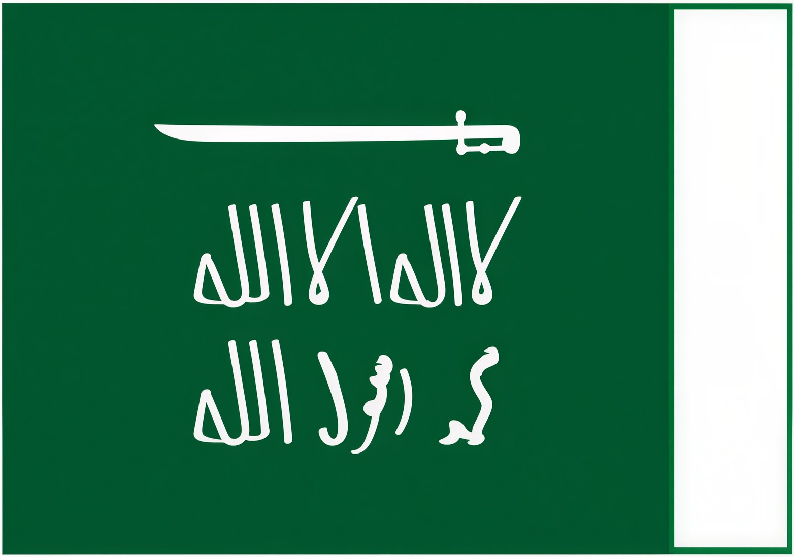

صدر الأمر الملكي الكريم من خادم الحرمين الشريفين الملك سلمان بن عبد العزيز آل سعود -حفظه الله- بأن يكون 11 مارس يوماً للعلم؛ والذي نستذكر فيه كل عام فخرنا برمز هويتنا الوطنية، واعتزازنا بالقيم الراسخة التي يحملها في مضامينه، والتي ترتكز عليها المملكة العربية السعودية.
للمزيد:
https://saudiflag.sa/ar دارة الملك عبدالعزيزبدأت قصة علم المملكة العربية السعودية مع تأسيس الدولة السعودية الأولى عام ١١٣٩ هـ / ١٧٢٧ م، فقد اتخذت الدولة منذ عهد مؤسسها الإمام محمد بن سعود، راية خضراء، مربعة الشكل، مشغولة من الخز والإبريسم، وجانبها أبيض جهة السارية، يتوسطها عبارة لا إله إلا الله محمد رسول الله.
١٣١٩ هـ / ١٩٠٢ م استمر الملك عبدالعزيز في استخدام ذات العلم ثم بعد ذلك اتخذ راية لونها أخضر بيضاء مما يلي السارية مربعة الشكل تتوسطها عبارة لا إله إلا الله محمد رسول الله، بالإضافة إلى سيفان عموديان متقاطعان.

تغير شكل الراية في عهد الملك عبدالعزيز إلى نفس الراية إلا أنها تضم سيفا واحدا أفقيا أعلى العلم بالإضافة إلى كلمة التوحيد.

٢٧ ذي الحجة عام ١٣٥٥ هـ / ١٩٣٧ م صدرت موافقة الملك عبدالعزيز بن عبدالرحمن الفيصل آل سعود باعتماد العلم بشكله الحالي بناء على ما رفعه نائب رئيس مجلس الشورى لرئيس مجلس الوكلاء في خطاب رقم (٣٥٤).